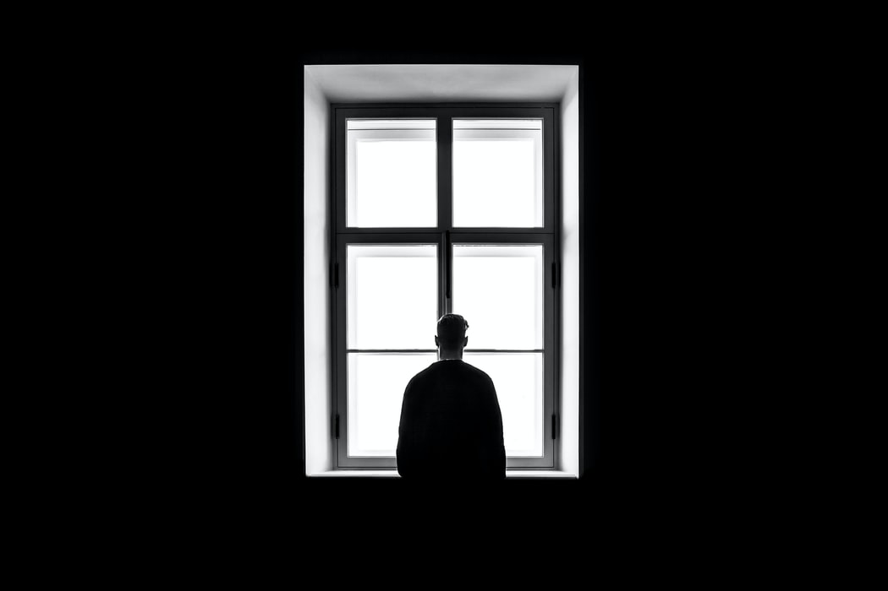
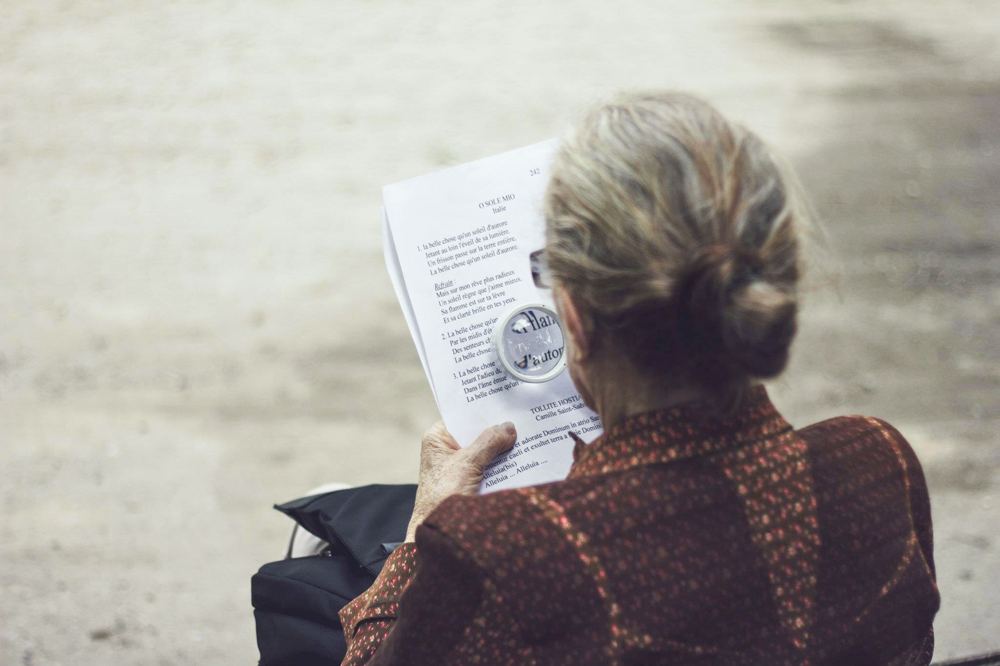

Loneliness in Older Persons
As the pace of life speeds up, older adults seem to be cut off from society. Once I visited my grandmother in my hometown. I hadn’t seen her for half a year because of my studies, and then she talked continually with me all about trifles for four hours until I even could not keep my eyes open. I told my friends and was surprised to find out most of them had experienced the same thing. Therefore, I started to take loneliness among elderly people more seriously and I did some research and found that that loneliness was common amongst the elderly. In fact, a survey by AARP showed that more than a third of elderly people said they felt a lack of companionship in various degree and 31% said they sometimes or always felt lonely and isolated.
As we all know, loneliness is detrimental for physical and mental health. To be more specific, loneliness increases risk of high blood pressure, dementia, heart disease, depression and even death. Notably, some who retire, lose their spouses, suffer an illness and separate from family or friend are vulnerable to feel lonely. Although it is more difficult for elderly people to develop various interests, maintain intimate relationships and obtain a sense of purpose to avoid loneliness than young people, elderly people and their family members can take actions to reduce loneliness.
For the elderly, a positive attitude may keep loneliness far away. An optimist always thinks the glass is half full rather than half empty. Elderly people also could try to regard retirement as a chance to do something new such as joining the university of the third age, watching educational videos or learning from friends, instead of an end. Besides, some elderly people just put themselves in an isolated position by staying at home and waiting for a visit. Actually, going outside with an open mind is the first step. And then it is also helpful to make friends and keep a good mood by be involved in community activities, visiting neighbors or just hanging out in markets. In addition, some elderly people just think about developing a new hobby will exhaust themselves. On the other hand, some easy hobbies without taking too much energy, like planting flowers and keeping a pet, instead of leading to exhaustion, adds much joy to life. Life is controlled not by age but by an attitude to age.
The companionship from family members also could distance the elderly from loneliness. It is widely acknowledged that the sense of kinship emotion support is indispensable. However, most of their younger generation who work in other cities can hardly come back home, causing elderly people feel lonelier. Hence keeping in touch by video phone maybe a solution. Although most elderly people think smart devices are too difficult to master, young family members should try to teach them with enough patience and make it easier by hand-drawn operational steps. It also helps elderly people contact with old friends by social media and find their new interests, which leads to less loneliness and higher life expectancy.
In short, tackling the issue of loneliness among elderly people often is not a simple thing and there is not a one-size-fits-all solution. However, in the ways suggested, we could help elderly people feel less lonely and isolated to enjoy their own life.